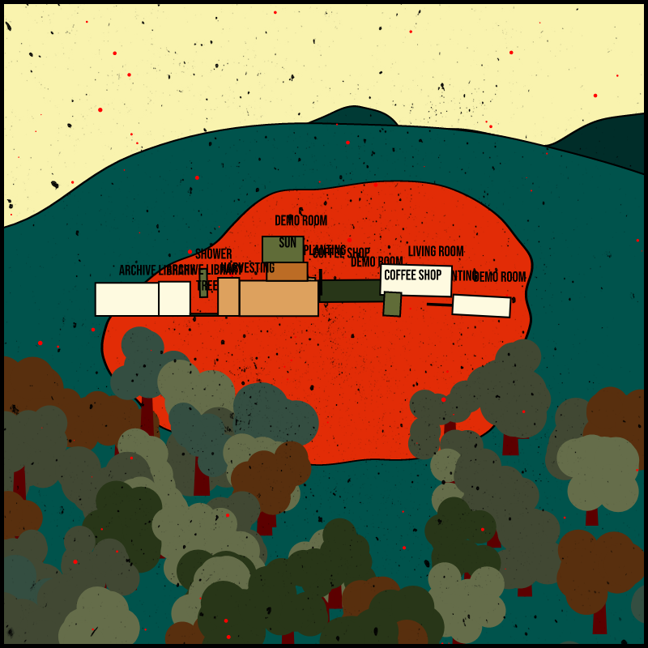

Interaction Design

在提這件作品前，一定需要講到 WAGIWAG Art Labs。我認識的 WAGIWAGI Art Labs 起初沒有名字，細着藝術邀我參加這個還沒有名字的建造計劃的討論，那時候我們稱它為「在印尼的建物」。實際上它可能不完全只是建物，或建物是一個抽象的建物，更需要的是在形塑過程中，思考它是如何與鄰里及當地社群如何共同治理、開放的各種可能。我們想像，如果它真的是個在土地上的建築，可能具備什麼功能？或許期望納入的圖書室 (Archive/Library)、數位製造實驗室 (Fabrication lab)、花圃 (Greenhouse)、廚房 (Kitchen)、生活區 (Living area) 等功能，還有藝術家交流駐村、外交任務等。而當地的 Jatiwangi Art Factory 除了籌備本屆卡賽爾文件展，也為即將可能發生的建物到處張羅資源，也希望有印地當地的文化特色，想要有大陽台和開放廚房。
以 WAGIWAG Art Labs 為創作靈感的 Possible Land 有兩系列數位作品。第一個系列鑄造於 akaswap ，是 Possible Land #01- 05 ：想像 WAGIWAGI Art Lab 正在成形，無數冒出來的想法將在紅土上被實踐。因此以 p5.js 為創作工具，寫了一透過觀者點擊畫面，空間的功能落到土地上的一幅畫，畫面中的樹也會變動，像是生命更迭一樣。 也運用了區塊鏈的機制，將作品收入以 50% 贈予細着藝術運用。
Possible Land #imaginations 是第二個系列，發佈於 fxhash。fxhash 演算藝術的樂園，有意思的是盲盒的機制。在設計 #imaginations 時，我加入了時間元素：不同的時間點打開 #imaginations 時，你將見到當下的天空顏色，凌晨有凌晨的樣子、傍晚和深夜更有其風貌，而晚上 21:00 後可見天空有一個月亮（見前一篇 matters 文章）。我想像，如果它未來是一副掛在牆上的畫，天空顏色不同也許會帶給人隱晦時間的感受吧。
無心插柳，這個機制剛好在卡賽爾文件展發展出有意思的呼應。一件來自三地交流靈感的作品，印尼、台灣、德國剛好有時差，因此 [ 來自它處的觀看 ] 成形：
在文件展作品為 3/64 editions， Possible Land #imaginations NFT 的鑄造者（也是目前的擁有者）分別為 daydreamer、我自己、細着藝術，在 Documenta fifteen 呈現時，會分別是德國時區、台灣時區、印尼時區。觀者於下午進入展場 Hübner areal 觀賞時，將會因時差關係看到台灣和印尼的月亮己升到天空。
特別謝謝細着藝術的專業協助，《瓦集瓦籍》策展人李依佩，耐心等待作品步步成形、謝謝 daydreamer 將 NFT 借給我展出。目前在 fxhash 還有許多沒有開盲盒的版次：https://www.fxhash.xyz/generative/11346 如果你也喜歡，不妨前往鑄造。